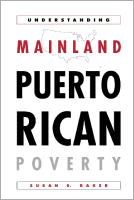

A new understanding of the impoverishment of Puerto Ricans living on the mainland
A new understanding of the impoverishment of Puerto Ricans living on the mainland


 A new understanding of the impoverishment of Puerto Ricans living on the mainland
A new understanding of the impoverishment of Puerto Ricans living on the mainland

|  |
Understanding Mainland Puerto Rican PovertySusan S. Bakerpaper EAN: 978-1-56639-970-8 (ISBN: 1-56639-970-X) |
"This book greatly enhances our understanding of Puerto Ricans by describing their history, and social, and labor experiences in the South, Midwest, and West, as well as New York City. In doing so, it enriches our knowledge about Puerto Ricans across the U.S. in a way that no other book does. Baker effectively highlights how the Puerto Rican experience is different from that of other Hispanic Americans. It is worth noting that the book is one of the first to utilize the results from the 2000 Census."
—Tony Carnes, Chair, Seminar on Contents and Methods in the Social Sciences, Columbia University, and director of the Research Institute for New Americans
For too long the study of impoverished Puerto Ricans living in the fifty states has been undermined by the use of broad generalizations. Puerto Ricans have been statistically grouped with all Latinos, studied with models developed for understanding African-American life, and written about as if New York's Puerto Rican community was the only such community worthy of detailed study. This book changes all that. In this important new work, Susan Baker looks beyond the traditional models and rewrites the origins, current state, and reasons behind Puerto Rican poverty.
The book tells the story of how Puerto Ricans have left the Rustbelt cities to return to the island or to seek job opportunities elsewhere. Those left behind are predominantly poor women with dependents who live in segregated neighborhoods with little chance of finding low-skilled jobs because of competition from non-citizen, non-politicized workers.
In her alternative explanation, the author presents data from across the country and puts forth an explanation that is grounded in Puerto Rican history and sensitive not only to the interconnectedness of the island and mainland population, but also the increasing distress faced by Puerto Rican women and the sad truth that Puerto Rican citizenship in this country is a second class one.
Excerpt available at www.temple.edu/tempress
"Susan Baker has written a noteworthy volume. To her extensive personal experience she brings an academic perspective that is thorough and well thought out. Much has been written about the Puerto Rican Diaspora focusing on New York City. Baker contributes to our understanding by tackling internal migration and terms of incorporation that vary from place to place. She makes a further contribution by comparing this population to other Latinos, exploring the role of segregation (including a cogent discussion of the dissimilarity index), and the impact of the larger U.S. economic structure."
—Alvaro L. Nieves, Ph.D., Professor of Sociology, Wheaton College (Ill.)
"This illuminating examination of poverty within the Puerto Rican population in mainland U.S.A. provides a readable resource with many applications. Baker carefully employs a methodology to examine Puerto Ricans that acknowledges the regional, class, gender, and generational diversity that exists within this group, as well as emphasizing the necessity of studying all Latino groups individually and within their own particular contexts. This work is significant not only for scholars in Puerto Rican studies but also for anyone seeking a better understanding of the distinct Latino populations within the United States."
—Edwin David Aponte, Assistant Professor of Christianity and Culture, Perkins School of Theology, Southern Methodist University
Preface
Part I: Viewing Puerto Ricans as Hispanic
1. Hispanics in the United States
2. The Journeys of Mexicans and Cubans
3. The Puerto Rican journey
4. How the Journeys End
Part II: Viewing Puerto Ricans Across the United States
5. How Puerto Ricans Fore from Place to Place
6. Infernal Migration, A Response?
7. How Segregation Fits In
8. Puerto Rican Women and the Labor Force
Part III: Viewing Puerto Ricans Within the US. Economic Structure
9. Immigrant Incorporation into U.S. Economy
10. Puerto Rican Incorporation into NEW York
11. Puerto Rican Incorporation into Areas Other Than New York
12. Conclusion
Appendix A: Selected MSAs by Region
Appendix B: Dissimilarity Indexes for Selected MSAs 1990
Works Cited
Index
Susan S. Baker is Assistant Practical Theology Coordinator and Instructor at Westminster Theological Seminary.
Latino/a Studies
Race and Ethnicity
American Studies
© 2015 Temple University. All Rights Reserved. This page: http://www.temple.edu/tempress/titles/1423_reg.html.